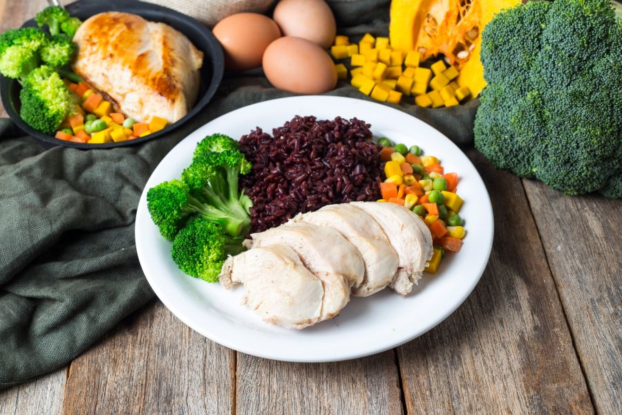

อาหารคลีน คืออะไร?
อาหารคลีน คือ อาหารที่มาจากธรรมชาติ
ผ่านการแปรรูปน้อยที่สุด
โดยเน้นการปรุงแต่งน้อยที่สุดเช่นกัน
เพื่อให้ได้รับสารอาหารจากธรรมชาติอย่างเต็มที่
โดยหลีกเลี่ยงสารเคมี สารปรุงแต่ง น้ำตาล ไขมัน โซเดียม และสารกันบูด เพื่อสุขภาพที่ดี
ป้องกันโรคไม่ติดต่อเรื้อรัง
และช่วยในการควบคุมน้ำหนัก.
หลักการสำคัญของอาหารคลีน
ความเป็นธรรมชาติ:
เลือกวัตถุดิบที่สดใหม่ เป็นธรรมชาติ และมาจากแหล่งที่เชื่อถือได้.
การแปรรูปน้อยที่สุด:
ลดการแปรรูปอาหาร
ลดการใช้วัตถุดิบที่ผ่านกระบวนการทางอุตสาหกรรมมากเกินไป.
การปรุงแต่งน้อย:
ลดการใช้เครื่องปรุงรสจัด เช่น เปรี้ยวจัด เค็มจัด หวานจัด และหลีกเลี่ยงสารปรุงแต่งอาหาร.
สารอาหารครบถ้วน:
เน้นการรับประทานอาหารให้ครบ 5 หมู่ โดยเลือกคาร์โบไฮเดรตเชิงซ้อน (เช่น ข้าวไม่ขัดสี) โปรตีนไขมันต่ำ (เช่น เนื้อปลา เนื้ออกไก่) และไขมันดี (เช่น น้ำมันมะกอก).
ความสะอาด:
อาหารต้องสะอาด ปลอดภัย ปราศจากสารปนเปื้อน สารเคมี สารกันบูด และสีสังเคราะห์.
